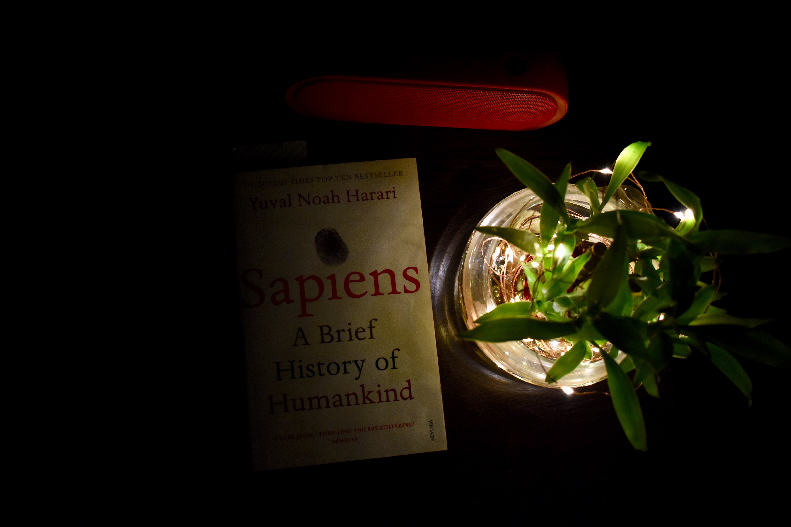

From a renowned historian comes a groundbreaking narrative of humanity’s creation and evolution—a #1 international bestseller—that explores the ways in which biology and history have defined us and enhanced our understanding of what it means to be “human.”
One hundred thousand years ago, at least six different species of humans inhabited Earth.
Yet today there is only one—homo sapiens. What happened to the others? And what may happen to us?
Most books about the history of humanity pursue either a historical or a biological approach, but Dr. Yuval Noah Harari breaks the mold with this highly original book that begins about 70,000 years ago with the appearance of modern cognition. From examining the role evolving humans have played in the global ecosystem to charting the rise of empires, Sapiens integrates history and science to reconsider accepted narratives, connect past developments with contemporary concerns, and examine specific events within the context of larger ideas